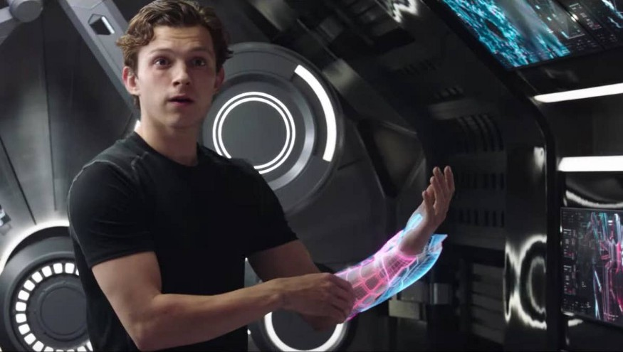

What Tom Holland tells us about AR/VR
15 December 2020

Spiderman: Far From Home is a great movie for many reasons. The only one I care about today, however, is that it contains a pretty cool scene in which Peter Parker uses some of Tony’s holographic workspace technology to engineer a new spider suit for himself. Since my job is to reimagine the engineering workspace of the future, this moment really stood out to me when I saw Far From Home in theaters.
Here is the scene I’m refering to (skip to 0:48 if you’re impatient). Now, there are a few things going on in this scene:
- At 0:48, Tom Holland sees a holographic (i.e. 3D) representation of various spider suits.
- At 0:51, he “grabs” a virtual object.
- A second later, he uses a pinch gesture to expand this object into what seems to be a menu.
- At 0:53, he scrolls through this menu in a way that is reminiscent of pickers, the scroll-type date & time selector interface from early versions of iOS.
- At 0:56, Happy (Jon Favreau) expresses quiet satisfaction in seeing Peter Parker follow in the late Tony’s footsteps.
- At 1:00, Tom Holland “puts on” a virtual arm piece, which stays attached to his arm much as if he were physically wearing it.
- Starting at 1:20, we see a series of gestures: he selects the web shooter device from one of the spider suits holograms, expands it using a pinch gesture, and selects an internal component of the web shooters to view.
To an engineer like me, this scene conveys a lot of information in a very short timeframe. We see that Tom Holland’s workspace uses a hologram to convey 3D information. The gestures he uses to interact with this display are a direct consequence of its “physical” nature. He’s able to grab something from the workspace simply because there is a physical-seeming object to be grabbed at a definite point in 3D space. Such a gesture would make no sense in the context of a keyboard and mouse. Now, this may seem like an incredibly obvious point I’m making, but it exemplifies a crucial point about interfaces in general: the way a user interacts with data is entirely dependent on the way in which that data is represented to the user.
Now, if I had to guess, I would say that AR / VR (XR, for short) is a much more plausible solution to displaying virtual 3D environments than hologram technology, mainly because I’m pretty sure the latter doesn’t even exist. This means we have to start considering what gestures are natural to the XR medium. A fairly obvious point would be to say that, since XR attempts to perfectly simulate the interaction between our sensory system and the physical world, we should simply look to real life for the set of gestures that will dominate interactions with XR.
I think there is merit to this idea, but that we have to consider the ramifications of the fact that XR (which stands for extended reality) does indeed extend reality. There are things users can do in simulations that can’t be done in real life. For one, users should be able to alter the settings of a simulation. This implies menus and buttons. Will we see scroll wheel type interfaces like the one Tom Holland uses? How will the transparency of virtual objects be adjusted? The brightness? All this to say that the existence of menus will complicate the process of transcribing gestures from real life.
Second, and perhaps more importantly, users of XR will have to deal with file management. In our daily lives, we address this problem using the only method that the laws of physics allows: space-division multiplexing! No, think about it. Physical objects can be thought of as files, and we organize and store them by distributing them in space. This type of file management has worked for humans for millennia, primarily because humans have learned to not have too many things. The enduring internal debate of “do I really need this?” is, in essence, an artifact of the constraints imposed upon us by our physical operating system (physics!).
A shift to XR, however, will dramatically change the way we think about our 3D files. There is nothing stopping users from having a video-game-style endless backpack. Now the question becomes, how do we search through that backpack? Or, restated, without the constraints of physics, what is the optimal way to organize a large number of objects? The question of file management is mundane, to be sure, but significant. If users have to spend five hours searching through an infinite backpack for their toothbrush, they’ll probably just opt back in to the real world.
In the scene where Tom Holland browses menus, opens up 3D files, and interacts with those files, we see one vision of what an XR interface might look like. However, there are a few details that the director left out: can Tom Holland feel the holographic objects? If not, does that mean he’s using sight to ensure his hand doesn’t pass through the menu? Physics does a really good job of preventing our body from passing through objects. In fact, that’s the only thing that allows us to “select” which things we want. The human body is only mediocre at knowing it’s own position in space; instead, it relies primarily on touching other objects—the floor, doorknobs, handles, railings, screens—to know where it is. One of the biggest challenges in designing an XR interface is to transcribe the sensation of touch into the digital world, so that users can precisely select the region of space with which they’d like to interact. Thank you, Tom Holland, for this very valuable lesson.